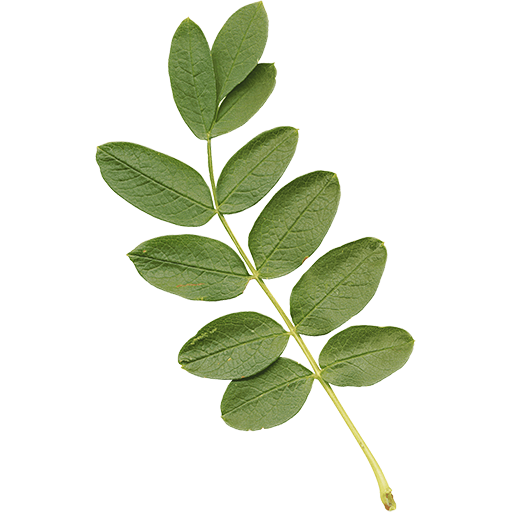
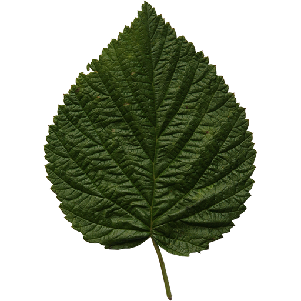
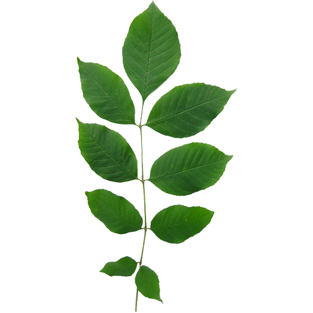
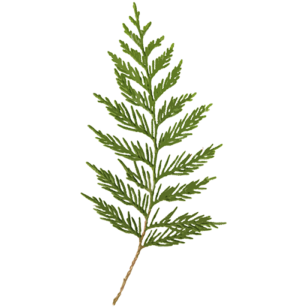
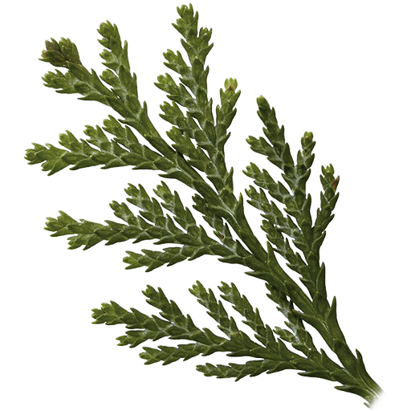
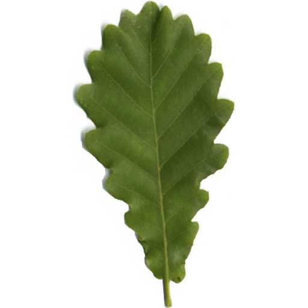
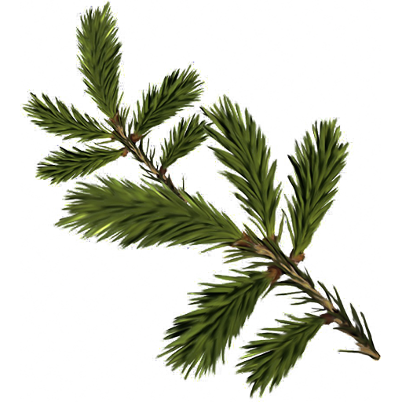
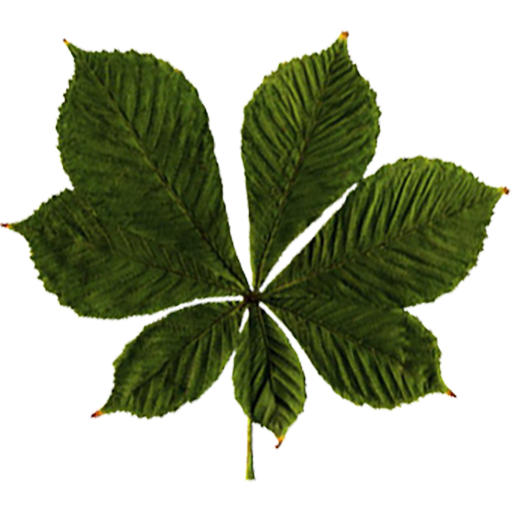
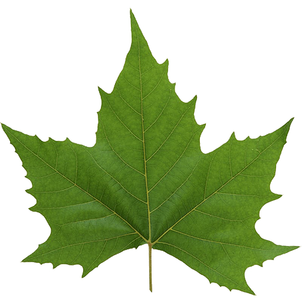

აკაცია ( ლათ. Acacia) – მცენარეთა გვარი მიმოზისებრთა ქვეოჯახისა. საქართველოს შავი ზღვის სანაპიროზე შემოტანილია ლეგა აკაცია (ლათ. Acacia dealbata), აბანოზის აკაცია (ლათ. Acacia melanoxylon) და სხვა. აკაციას როგორც სწრაფმზარდ მცენარეს რგავენ ფერდობების გატყიანებისა და ქალაქების გამწვანებისათვის, მის მერქანს კი იყენებენ ავეჯის წარმოებაში."/>
ცაცხვი (ლათ. Tilia caucasica) – ფოთოლმცვენი 35 მეტრამდე სიმაღლის ხეა.ეთერზეთები, გლიკოზიდები, მთრიმლავი ნივთიერებები და ლორწო. არომატის მატარებლად ითვლება ფარნეზოლის სპირტი. გარდა ამისა, ცაცხვის შემადგენლობაში შედის კაროტინი და C-ვიტამინი. ცაცხვის ყვავილი გამოიყენება ოჯახურ ოფლმდენ საშუალებად, რომელიც მზადდება ცხელი ჩაის სახით, ხმარობენ აგრეთვე ნაყენს პირში და ყელში გამოსავლებად, საფენებისათვის და სხვა მიზნით."/>
იფანი, კოპიტი (ლათ. Fraxinus) – ფოთოლმცვივანი ხეების გვარი ზეთისხილისებრთა ოჯახისა.გვხვდება საქართველოს თითქმის ყველა რეგიონში. კარგად ხარობს დაბლობისა და მთის შუა სარტყლის მეზოფილური ტყეების ნათელ უბნებში ფართოფოთლოვან ჯიშებთან ერთად.გარდა ამისა, საქართველოში იფნის 24 ეგზოტიკური სახეობა იზრდება. იფნის მერქანი მაღალხარისხოვანია; ქერქი შეიცავს მთრიმლავ ნივთიერებებს, ფოთოლი – ვიტამინებს და ეთეროვან ზეთებს. იყენებენ ბაღ-პარკების, ტყე-პარკებისა და ქუჩების გასამწვანებლად."/>
კედარი (ლათ. Cedrus) – მარადმწვანე წიწვოვან მცენარეთა გვარი ფიჭვისებრთა ოჯახისა. საქართველოში შემოიტანეს XIX საუკუნის II ნახევარში. მიუხედავად იმისა, რომ ტენის მოყვარული ხეა, მეტ-ნაკლებად გვალვა- და ყინვაგამძლეც გამოდგა თბილისსა და მის მიდამოებში. საქართველოში კარგად ხარობს ზღვის დონიდან 1200 მ-მდე."/>
კვიპაროსი (Cupressus) – მარადმწვანე ხეების, იშვიათად – ბუჩქების, გვარი კვიპაროზისებრთა ოჯახიდან. საქართველოში 9 სახეობაა შემოტანილი. მათგან უფრო ფართოდაა გავრცელებული მარადმწვანე კვიპაროზი (Cupressus sempervirens). კვიპაროზის სამშობლოდ ითვლება ჰიმალაის მთების სამხრეთ კალთები. XIX საუკუნემდე პირამიდულ კვიპაროსს საქართველოში ალვის ხეს ეძახდნენ. ეს სახელი საქართველოში მაზდეანობის გავრცელებას უკავშირდება. სახელი „ალვის ხე“ ანუ „წვის ხე“ თავისი ვიწრო, პირამიდული ჰაბიტუსის გამო, მართლაც, უხდებოდა მარადმწვანე კვიპაროსს, როგორც მაზდეანური სარწმუნოების სიმბოლოს."/>
კოლხური მუხა (ლათ. Quercus hartwissiana, Quercus armeniaca). სწრაფმზარდი, მაღალხარისხოვანი მერქნის მქონე დეკორატიული მცენარეა; უმთავრესად გვხვდება დასავლეთ საქართველოში (აფხაზეთი, რაჭა-ლეჩხუმი, სამეგრელო, იმერეთი, გურია, აჭარა); აღმოსავლეთ საქართველოდან კი დღეისათვის მხოლოდ შიდა კახეთიდანაა (ბაბანეური) ცნობილი. საქართველოს გარეთ – შავი ზღვის სანაპირო (მზიმთის აუზიდან გელენჯიკამდე), მცირე აზია, იმიერკავკასია."/>

სოჭი (ლათ. Abies) – მერქნიან მცენარეთა გვარი ფიჭვისებრთა ოჯახისა. 50-მდე სახეობა გავრცელებულია ჩრდილოეთ ნახევარსფეროში. საქართველოში ბუნებრივად გავრცელებულია მხოლოდ ერთი სახეობა – კავკასიური სოჭი და ინტროდუცირებულია 13 სახეობა. სოჭი ჩრდილის ამტანი და სინესტის მომთხოვნია. ახალგაზრდა ხე ნელა იზრდება, ცოცხლობს 500-800 წლამდე. მრავლდება თესლითა და გადაწვენით."/>
წაბლი (ლათ. Castanea) – ფოთოლმცვივან მერქნიან მცენარეთა გვარი წიფლისებრთა ოჯახისა.წაბლნარი გავრცელებულია ზღვის დონიდან 300-1000 მ ფარგლებში. გვხვდება იმ რაიონებში, სადაც ზამთრის ტემპერატურა 0.3 °C, ზაფხულის 18-22 °C ფარგლებში მერყეობს და ნალექების რაოდენობა 700 მმ აღემატება. თაფლოვანი მცენარეა. უსისტემო ექსპლუატაციის გამო არეალი მკვეთრად შემცირდა, ამიტომ შეტანილია „საქართველოს წითელ წიგნში“."/>
ჭადარი (ლათ. Platanus) – მცენარეთა გვარი ჭადრისებრთა ოჯახისა.საქართველოში კულტივირებულია 2 სახეობა: აღმოსავლური ჭადარი (P. orientalis) და დასავლური ჭადარი (P. occidentalis), რომლებიც მოშენებულია ბაღ-პარკებსა და ქუჩებში. საქართველოში ყველაზე დიდი ჭადარი დგას თელავში, რომლის გარშემოწერილობა 12 მ აღწევს."/>